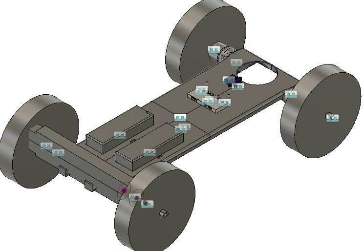
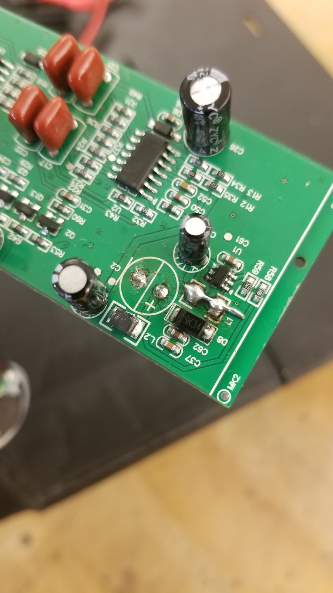

Current Project (2019-2020)
The project that I am working/worked on is developing a landmine locating
robot that would be cheap enough to make many of them, as well as being able
to built with mostly off the shelf parts to facilitate ease of assembly.
I wanted to do this project because of the large amount of landmines that
are still in the ground and are still a threat to the local community and/or
the humanitiaran effort in that area
A major part of this class is the 21st century skills
that are applied throught the course of the class. These are major
as they are the main learning method in the class due to the nature of
project based learning. The 21st century skills are
- Critical Thinking and Problem Solving
- Find and Use Information/Information Technology
- Creativity and Innovation
- Global and Cultural Awareness
- Civic Responsibility
- Work Ethic
- Personal Responsibility
- Communication
- I have used this 21st century skill probably the most
out of all of the others, as this skill is applied to all of the other skills
and is used extensivly in group work to keep the group moving smoothly
-
A few examples of this skill in use are the creation of our inital group meeting talking about
the norms for the group to keep the group civilized and communicating issues and solving
problems without heated argument and too keep the project on track. (see fig 1)
-
Figure 1
-
The other major application of this skill is the CAD process that we went through when
designing the robot. This process of turning our ideas from the brainstoming that we had
done to the virtual space so we could 3d print the chassis of the robot. During this phase
there was much communication that had to be done to ensure the fit of all of the components
on the chassis. (see fig 2)
-
Figure 2

-
The next major part of the project that required signifigant communication was
the repair of the metal detector. This part of the project we had some difficulty
with the metal detector that we had as we were slightly overvolting the board and
we had to troubleshoot what the problem with the board was. This ended up being
a major setback and sticking point for the project. There was much communication
that was undertaken to work to decide what to do to fix the metal detector. (see fig 3)
-
Figure 3

-
After working on getting the metal detector fixed, we ran into other problems with
getting the Raspberry Pi setup to start work on autonomous movement of the robot.
The major problems that we had during this was getting internet to get the proper
software and update the os so that it would run more smoothly. This was a major struggle
as getting this updated and working more smoothly was holding back us from getting the
robot to start with autonomous movement and tracking. We had major communication about how
to get the Raspberry Pi up and running so that we could start programming on it, but we ran out
of time as this was the last thing that we were working on before COVID-19 caused school to be cancled.
- Collaboration
-
We had major sections of collaboration that we worked on to get the CAD part of the project done.
This goes hand in hand with communication to get the CAD portion of the project done. This was major
as getting the CAD done was imperitive to the projects completion. Each team member worked on a different
part of the overall cad and wokred to get our portions of CAD done.